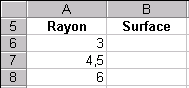
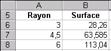

Chapitre 7 - Définir ses propres fonctions
VBA offre la possibilité de créer ses propres fonctions, qui peuvent être utilisées dans Excel comme n’importe quelle fonction intégrée.
Utiliser les fonctions intégrées d’Excel
Toutes les fonctions intégrées d’Excel utilisable depuis VBA sont en fait des méthodes d’objets. Pour utiliser une fonction intégrée d’Excel dans VBA, il faut préciser à VBA où peut être trouvée cette fonction. Pour cela, il faut donc comme indiqué dans le
chapitre 3 faire précéder le nom de la fonction de l’objet sur lequel elle va s’appliquer.
Par exemple, l’objet WorkSheetFunction permet d’accéder à de nombreuses fonctions courantes telles que la fonction Min. Le code correspondant est donc :
WorkSheetFunction.Min()
Toutes les fonctions intégrées d’Excel ne sont pas disponibles dans VBA. Néanmoins, il est fortement conseillé d’utiliser une fonction intégrée d’Excel pour faire un calcul donné, si cette dernière existe, plutôt que de définir sa propre fonction, qui serait moins efficace en termes de temps de calcul.
Définition d'une fonction
Jusqu’à présent nous n’avons créé que des
procédures
sans arguments, c'est-à-dire ne nécessitant pas d’apport d’information extérieure pour réaliser leurs tâches. Cependant, lorsque l’on souhaite que l’action d’une procédure dépende d’un contexte, de l’information sur ce contexte doit être apportée en entrée de la procédure sous forme d'arguments.
Une fonction est une suite d'instructions qui retourne une valeur. Elle commence par le mot clé Function suivi du nom de la fonction et d’une liste d’arguments entre parenthèses, qui peut être vide. Elle se termine par le mot clé End Function.
Une fonction indique la valeur à retourner en initialisant son nom avec la valeur de retour.
Une fonction a donc la syntaxe suivante :
Function NomFonction([argument_1,..., argument_n])
Instructions
...
NomFonction = Expression
...
End Function
Dans les exemples, les crochets [ ] signifient que les arguments sont facultatifs.
Dans VBA, les arguments d’une fonction sont séparés par des virgules, alors que dans Excel ils sont séparés par des points-virgules.
Exercice guidé
Parce que le meilleur moyen d'apprendre est en le faisant soi-même, voici un exercice guidé sur la définition des fonctions ! Suivez le bien pas à pas et tout se passera bien.
On cherche à écrire une fonction qui calcule la surface d’un cercle à partir de son rayon.
1) Ouvrir le classeur TEST-MACRO.XLS, puis l’éditeur de Visual Basic.
2) Insérer un nouveau module de code MODULE2 et écrire la fonction suivante :
Function SurfaceCercle(Rayon As Double) As Double
SurfaceCercle = WorksheetFunction.Pi() * Rayon * Rayon
End Function
SurfaceCercle est une fonction à un argument : le rayon du cercle Rayon, qui est une variable de type réel (Double). Elle renvoie la surface du cercle de rayon Rayon, qui est de type réel (Double). Pi est une fonction intégrée d’Excel.
Dans VBA les réels sont écrits avec des points, alors qu’ils sont écrits avec des virgules dans Excel.
3) Retourner dans Excel et saisir les données suivantes dans la feuille de calcul FEUIL1 :

4) Si on note dans la cellule B6, la formule =SurfaceCercle(A6) et que l’on procède de manière analogue pour les cellules suivantes, on obtient le résultat suivant :

Lorsqu’on écrit =SurfaceCercle(A6) dans la cellule B6 la valeur de la cellule A6 est transmise à la fonction SurfaceCercle par le biais de l’argument Rayon. La fonction SurfaceCercle initialise alors son propre nom avec le résultat calculé (WorksheetFunction.Pi() * Rayon * Rayon). Le résultat est ensuite retourné à la cellule B6.
La fonction SurfaceCercle peut être utilisée comme n’importe quelle fonction intégrée d’Excel (onglet formule - insérer une FONCTION). Par contre, elle n'apparaît pas dans la liste des macros d’Excel.
Contrairement à une procédure, une fonction retourne une valeur. Lorsqu’on utilise cette fonction dans une autre fonction ou une autre procédure, la valeur renvoyée doit être sauvegardée dans une variable. Par exemple, la fonction SurfaceCercle peut être utilisée dans la procédure MacroTestFonction dont le code est fourni ci-dessous.
Sub MacroTestFonction()
Dim valeur As Double
valeur = SurfaceCercle(1.5)
Range("B1").Value = valeur
End Sub
Ici la variable valeur reçoit le résultat de la function SurfaceCercle pour un rayon donné égal à 1.5.
L’instruction With...End With
L’instruction With...End With est utile lorsque les références à un objet sont répétées plusieurs fois dans une petite section de code.
Exemple :
Sub ModifiePolice(MaPlage As Range)
MaPlage.Select
Selection.Font.Size = 12
Selection.Font.ColorIndex = 3
Selection.Font.Italic = True
End Sub
La macro ModifiePolice peut être réécrite plus simplement comme suit :
Sub ModifiePolice(MaPlage As Range)
MaPlage.Select
With Selection.Font
.Size = 12
.ColorIndex = 3
.Italic = True
End With
End Sub